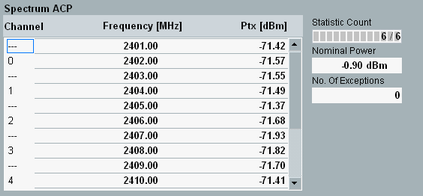
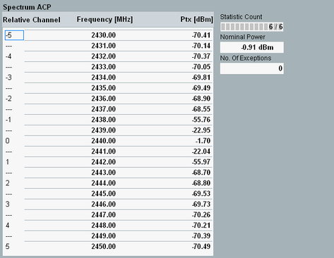

Spectrum ACP Results (LE)
The "Spectrum ACP" table view for LE packets shows the adjacent channel power results.
The frequency band defined for Bluetooth devices is the unlicensed 2.4 GHz "Industrial, Scientific and Medical" (ISM) frequency band.
There are two possible "Spectrum ACP" table views. The view depends on the ACP measurement mode:
- LE all channels (LE frequencies only) or
- ACP +/-5 channels (any frequencies)
In-band emissions are analyzed in the 1 MHz half-channels (compared to the LE channel bandwidth of 2 MHz) centered at 2401 MHz, 2402 MHz, ... , 2481 MHz. Refer to the LE test specification RF PHY for Bluetooth wireless technology. |

Spectrum ACP all channels results (LE)

Spectrum ACP +/-5 channels results (LE)
The "Spectrum ACP" view presents the following results:
- "(Relative) Channel": Bluetooth LE regulatory or relative channel number.
– In "ACP +/- 5 Channels" mode, relative channel number indicates the center frequency offset relative to the current RF frequency in units of 2 MHz. The value of 2 MHz corresponds to the LE channel width. – With "LE All Channels" mode, the channel number follows the LE scheme (channels 0 to 39, corresponding to RF frequencies 2402 MHz, 2404 MHz ... 2480 MHz). Test specification for Bluetooth wireless technology defines in-band emission measurements only for test packets with LE 1M PHY (uncoded) and LE 2M PHY (uncoded). LE coded PHY and advertiser packets are not supported in "LE All Channels" mode.
In both modes, frequencies mid way between two valid LE channels is indicated by dashes. - "Frequency" in MHz: Center frequency of the respective half-channel.
- "Ptx" in dBm: ACP results for all half-channels.
According to the Bluetooth LE test specification, the ACP is the sum of the maximum powers PTXi at 10 distinct, equidistant frequencies fi distributed across the half-channel width. The half-channel width is = 1 MHz.
See also Figure "ACP calculation for EDR packets". - "No. of Exceptions": Number of half-channels in which the recorded PTX value is greater than "ACP > Low Energy > Exceptions PTX" limit. The center channel (defined by the selected LE RF channel or frequency) and 2 half-channels, each, on either side of this center channel are excluded from this measurement.
- "Nominal Power": Burst power during the carrier-on state, measured in the "LE Filter Bandwidth" / "LE 2M PHY Filter Bandwidth".
Follow "Spectrum ACP Measurement" to measure the in-band emissions in line with the test specification for Bluetooth wireless technology. |
For query of the results via remote control, see "Spectrum Measurement Results (LE)"